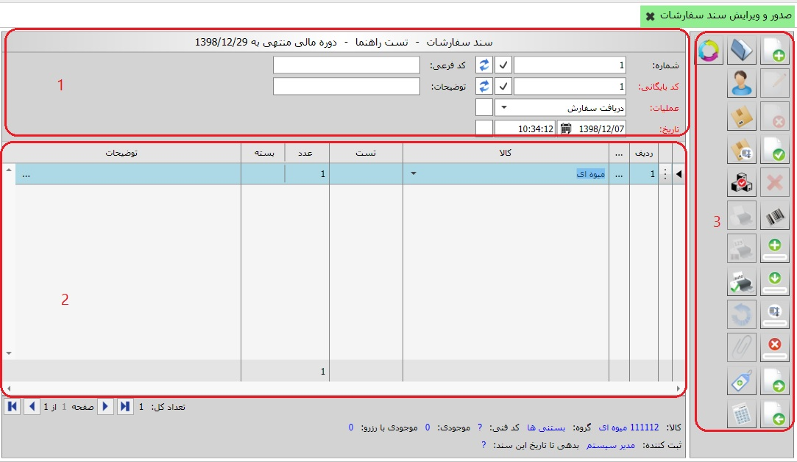

در این قسمت شما می توانید با استفاده از عملیات ایجاد شده در صفحه «مدیریت عملیات سفارشات» سند صادر کنید، برای ورود به این صفحه روی منوی «صدور و ویرایش سند سفارشات» کلیک کنید، پنجره ی زیر ظاهر می شود:
همانطور که می بینید در صفحه ی بالا پنجره ی صدور سفاررشات به سه قسمت تقسیم شده است که در زیر به شرح هر یک می پردازیم:
کادر شماره 1: شامل مشخصات خود سند از قبیل شماره، کد بایگانی، تاریخ و ساعت ثبت سند و مشخصات عملیات خزانه می باشد. اسناد صادر شده از سیستم خزانه بر حسب عملیات و به ترتیب صدور شماره بندی می شوند. این شماره الزامی نیست به عبارتی سند سفارشات صادر شده می تواند فاقد شماره باشد، همچنین این شماره می تواند تکراری باشد یعنی دو سند خزانه می توانند دارای یک شماره باشند، البته این شماره قابلیت مرتب شدن دارد که در قسمت «بایگانی و مدیریت اسناد سفارشات » شرح داده خواهد شد. هر سند سفارشات که صادر می شود باید دارای تاریخ و ساعت باشد که به صورت پیش فرض مطابق با تاریخ و ساعت سیستم می باشد ولی قابلیت ویرایش دارد و شما می توانید هر دو را ویرایش کنید. کلیه اسنادی که از سیستم خزانه صادر می شوند به ترتیب صدور کدبندی می شوند، این کد الزامی می باشد و هر سند سفارشات باید دارای یک کد بایگانی باشد، همچنین این کد قابلیت تکراری بودن و مرتب شدن را ندارد. زمانی که هر یک از عملیات ها را انتخاب کنید مشاهده می نمایید که فیلد هایی که در مدیریت عملیات خزانه برای عملیات مورد نظر تعیین کرده بودید در فرم صدور سند سفارشات فعال می گردد. همچنین اگر در هنگام تعریف عملیات سفارشات برای عملیات پارامتری در سطح سند تعریف کرده باشید، پارامتر تعریف شده به صورت یک فیلد در سطح سند نمایش داده خواهد شد.
کادر شماره 2:در این کادر ردیف های سند سفارشات را در اختیار دارید. در صورتی که برای عملیات انتخابی در قسمت مدیریت عملیات پارامتر در سطح ردیف تعریف کرده باشید آن پارامتر به صورت یک ستون به این فرم اضافه می شود(کنار ستون های کالا و واحد) و شما باید آن را برای تک تک ردیف های سند مشخص کنید. در صورتی که پارامتر در سطح سند تعریف کرده باشید آن پارامتر ها در پایین یا بالای ردیف های فرم نشان داده می شوند و مقدار آنها باید مشخص شود.
چنانچه عملیات انتخابی دارای مبنا باشد با کلیک روی علامت سه نقطه
 کنار ردیف، پنجره انتخاب مبنا(شامل تمام اسنادی که بر اساس
عملیات مبنا و به نام شخص انتخابی در قسمت شماره 1 صادر شده اند) ظاهر
می شود و شما می توانید از میان آنها اسناد مبنا را انتخاب کنید و با
تایید، اسناد مبنا داخل فرم صدور سند سفارشات نمایش داده می شوند و در
صورت تمایل می توانید تغییراتی در مقادیر پارامترهای آن ها ایجاد کنید.
کنار ردیف، پنجره انتخاب مبنا(شامل تمام اسنادی که بر اساس
عملیات مبنا و به نام شخص انتخابی در قسمت شماره 1 صادر شده اند) ظاهر
می شود و شما می توانید از میان آنها اسناد مبنا را انتخاب کنید و با
تایید، اسناد مبنا داخل فرم صدور سند سفارشات نمایش داده می شوند و در
صورت تمایل می توانید تغییراتی در مقادیر پارامترهای آن ها ایجاد کنید.
کادر شماره 3: نوار عمودی سمت راست فرم صدور سند سفارشات شامل ابزارهایی است که به شرح تک تک آنها می پردازیم:
 ایجاد سند جدید (F8):
برای ایجاد سند جدید می توانید از این آیکن استفاده کنید.
ایجاد سند جدید (F8):
برای ایجاد سند جدید می توانید از این آیکن استفاده کنید.
ویرایش این سند (F2): این آیکن هنگامی که سند در حالت ثبت شده قرار دارد فعال می باشد و با کلیک بر روی آن، سند از وضعیت ثبت شده خارج می شود و می توان آن را ویرایش کرد.
 حذف این سند (F9):
این آیکن برای حذف سند ثبت شده به کار می رود.
حذف این سند (F9):
این آیکن برای حذف سند ثبت شده به کار می رود.

مشاهده ی کاردکس انبار(F6): کاردکس کالای مورد نظر را نمایش می دهد.
مشاهده ی کاردکس تجمیعی انبار(shift+F6) کاردکس کالای مورد نظر را به صورت تجمیعی نمایش می دهد به طور مثال اگر از یک کالا در اندازه های مختلف داشته باشیم جمع تعداد آنها را نمایش می دهد.
 انتخاب کالا (F3)
لیستی از کالاها جهت انتخاب در اختیار شما قرار می دهد.
انتخاب کالا (F3)
لیستی از کالاها جهت انتخاب در اختیار شما قرار می دهد.
 ثبت سند (Ctrl+Enter):
پس از اتمام ثبت اطلاعات سند یا اتمام
ویرایش آن با کلیک بر روی این آیکن سند به حالت ثبت شده در می آید.
ثبت سند (Ctrl+Enter):
پس از اتمام ثبت اطلاعات سند یا اتمام
ویرایش آن با کلیک بر روی این آیکن سند به حالت ثبت شده در می آید.
انصراف از ویرایش (Ctrl+F2): اگر در حین ویرایش یک سند از ویرایش منصرف شدید می توانید از این آیکن استفاده کنید.
 ایجاد ردیف (Ctrl+Plus):
برای ایجاد یک ردیف در سند در حال ثبت یا ویرایش بکار می رود.
ایجاد ردیف (Ctrl+Plus):
برای ایجاد یک ردیف در سند در حال ثبت یا ویرایش بکار می رود.
 کپی ردیف (Ctrl+Shift+Plus):
چنانچه تمایل داشتید یک ردیف سند را عینا در ردیف بعدی کپی کنید
از این گزینه استفاده کنید، اگر ردیف مورد نظر را انتخاب کنید
و روی این آیکن کلیک کنید یک کپی در ردیف زیرین آن ایجاد می شود.
کپی ردیف (Ctrl+Shift+Plus):
چنانچه تمایل داشتید یک ردیف سند را عینا در ردیف بعدی کپی کنید
از این گزینه استفاده کنید، اگر ردیف مورد نظر را انتخاب کنید
و روی این آیکن کلیک کنید یک کپی در ردیف زیرین آن ایجاد می شود.
 حذف ردیف (Ctrl+Minus):
پیش از ثبت سند یا در هنگام ویرایش سند اگر تمایل داشتید
یک ردیف حذف شود آن ردیف را انتخاب کنید و روی این آیکن کلیک کنید.
حذف ردیف (Ctrl+Minus):
پیش از ثبت سند یا در هنگام ویرایش سند اگر تمایل داشتید
یک ردیف حذف شود آن ردیف را انتخاب کنید و روی این آیکن کلیک کنید.
 مشاهده سند بعدی (F12):
با این آیکن شما قادر هستید
اگر بعد از سند جاری سند دیگری باشد سند بعدی را مشاهده کنید.
مشاهده سند بعدی (F12):
با این آیکن شما قادر هستید
اگر بعد از سند جاری سند دیگری باشد سند بعدی را مشاهده کنید.
 مشاهده سند قبلی (F11):
با کلیک بر روی این آیکن شما یک سند قبل از سند جاری را مشاهده می کنید.
مشاهده سند قبلی (F11):
با کلیک بر روی این آیکن شما یک سند قبل از سند جاری را مشاهده می کنید.
 باز کردن (F3):
با این آیکن شما می توانید لیست کل اسناد صادر شده
از سیستم سفارشات را در پنجره ای که ظاهر می شود مشاهده کنید و با
انتخاب هر یک از ردیف های موجود، سند مورد نظرتان را مشاهده نمایید.
باز کردن (F3):
با این آیکن شما می توانید لیست کل اسناد صادر شده
از سیستم سفارشات را در پنجره ای که ظاهر می شود مشاهده کنید و با
انتخاب هر یک از ردیف های موجود، سند مورد نظرتان را مشاهده نمایید.
 چاپ این سند (Ctrl+P):
شما با این آیکن قادر خواهید بود از یک سند ثبت شده گزارش بگیرید،
چنانچه روی این آیکن کلیک کنید پنجره ای نمایان می شود و شما
می توانید گزارش مورد نظر خود را از گزارش های موجود انتخاب کرده
و یا حتی گزارش دلخواه خود را طراحی کنید و سپس پرینت بگیرید.
چاپ این سند (Ctrl+P):
شما با این آیکن قادر خواهید بود از یک سند ثبت شده گزارش بگیرید،
چنانچه روی این آیکن کلیک کنید پنجره ای نمایان می شود و شما
می توانید گزارش مورد نظر خود را از گزارش های موجود انتخاب کرده
و یا حتی گزارش دلخواه خود را طراحی کنید و سپس پرینت بگیرید.
 چاپ تکرار شونده (Ctrl + T):
شما با این آیکن قادر خواهید بود به تعداد مقدار یک
سند ثبت شده گزارش بگیرید، چنانچه روی این آیکن کلیک کنید پنجره ای
نمایان می شود و شما می توانید انتخاب کنید به تعداد موجود در ستون
مقدار از سند پرینت گرفته شود و یا از یک مقدار مشخص به تکرار
پرینت گرفته شود. با کلیک بر روی این گزینه منوی زیر باز می شود :
چاپ تکرار شونده (Ctrl + T):
شما با این آیکن قادر خواهید بود به تعداد مقدار یک
سند ثبت شده گزارش بگیرید، چنانچه روی این آیکن کلیک کنید پنجره ای
نمایان می شود و شما می توانید انتخاب کنید به تعداد موجود در ستون
مقدار از سند پرینت گرفته شود و یا از یک مقدار مشخص به تکرار
پرینت گرفته شود. با کلیک بر روی این گزینه منوی زیر باز می شود :

 مشاهده مبنا:
با کلیک بر این آیکن پنجره
مشاهده مبنا را ملاحظه خواهید کرد که شامل چهار گزینه می باشد
مشاهده مبنا:
با کلیک بر این آیکن پنجره
مشاهده مبنا را ملاحظه خواهید کرد که شامل چهار گزینه می باشد
1. ردیف های مبنای این سند: این گزینه ردیف های سندی را نشان می دهد که سند جاری بر مبنای آن صادر شده است.
2. ردیف های بر مبنای این سند: ردیف هایی را نشان می دهد که بر مبنای ردیف های سند جاری ثبت شده اند.
3. ردیف های این سند: ردیف های سند جاری را نمایش می دهد.
4. ردیف های پایه این سند: اگر عملیات تعریفی شما بر اساس زنجیره ای از مبنا ها ایجاد شده باشد به این معنا که هر یک از عملیات بر مبنای عملیات دیگری صادر شود، با استفاده از این گزینه می توانید عملیات پایه این زنجیره مبنا ها را مشاهده کنید.
 ضمیمه کردن فایل ها:
گاهی لازم است فایل
ها یا مستندات مرتبط با سند ثبت شده همراه با آن بایگانی شود. با
استفاده از این گزینه که بعد از ثبت سند فعال می شود می توانید
انواع فایل های مربوط به سند مورد نظرتان را به آن ضمیمه کنید.
ضمیمه کردن فایل ها:
گاهی لازم است فایل
ها یا مستندات مرتبط با سند ثبت شده همراه با آن بایگانی شود. با
استفاده از این گزینه که بعد از ثبت سند فعال می شود می توانید
انواع فایل های مربوط به سند مورد نظرتان را به آن ضمیمه کنید.
برای ضمیمه کردن فایل ها مراحل را طبق شکل های زیر دنبال کنید:


در شکل قبل مشاهده می کنید که مسیر فایل انتخاب شده در پایین صفحه نمایش داده می شود، پس از زدن گزینه، فایل ضمیمه در صفحه به نمایش درخواهد آمد. به همین ترتیب می توانید انواع مختلف فایل را به تعداد دلخواه به سند مورد نظرتان ضمیمه کنید، با این کار صفحه ضمیمه به شکل زیر نمایش داده خواهد شد:

فایل های ضمیمه شده در قالب مشخصی شامل نام فایل و نوع آن نمایش داده می شوند. اگر نشانگر ماوس را روی هر یک از فایل ها قرار دهید، سه گزینه روی هر یک فعال می گردد که به شرح زیر می باشند:

برای اجرای فایل ضمیمه شده از گزینه «اجرا» استفاده کنید. با استفاده از گزینه «ذخیره» می توانید فایل ضمیمه را در محل مورد نظرتان ذخیره نمایید. برای حذف فایل انتخاب شده از لیست فایل های ضمیمه از گزینه «حذف» استفاده می شود
 لازم است بدانید برای استفاده از گزینه «ضمیمه کردن فایل ها» باید
ابتدا مسیر ضمیمه ها را در پنجره «مدیریت سرور» تعیین کنید که شرح کامل
آن را می توانید در فایل «قابلیت های عمومی نرم افزار» مشاهده نمایید.
لازم است بدانید برای استفاده از گزینه «ضمیمه کردن فایل ها» باید
ابتدا مسیر ضمیمه ها را در پنجره «مدیریت سرور» تعیین کنید که شرح کامل
آن را می توانید در فایل «قابلیت های عمومی نرم افزار» مشاهده نمایید.
 محاسبه مقدار (F7):
اگر یک عملیات دارای پارامترهایی باشد
که نیاز به محاسبه دارند با کلیک بر روی این آیکن
محاسبه می شوند.
محاسبه مقدار (F7):
اگر یک عملیات دارای پارامترهایی باشد
که نیاز به محاسبه دارند با کلیک بر روی این آیکن
محاسبه می شوند.
 انتخاب دوره مالی (F10):
با کلیک بر روی این آیکن پنجره ای ظاهر می شود که لیست دوره های مالی تعریف شده در سیستم
را شامل می شود و شما می توانید دوره مالی مورد نظر خود را انتخاب کنید.
انتخاب دوره مالی (F10):
با کلیک بر روی این آیکن پنجره ای ظاهر می شود که لیست دوره های مالی تعریف شده در سیستم
را شامل می شود و شما می توانید دوره مالی مورد نظر خود را انتخاب کنید.